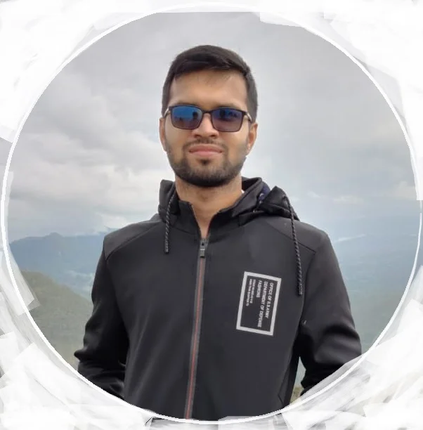
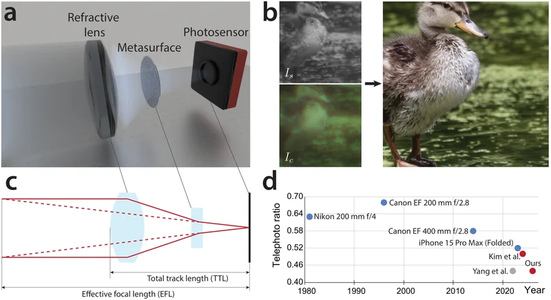
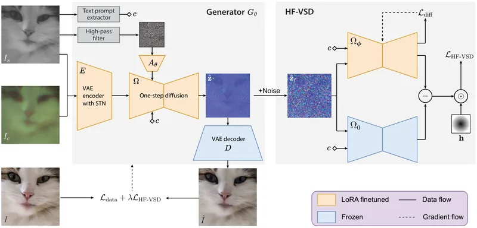
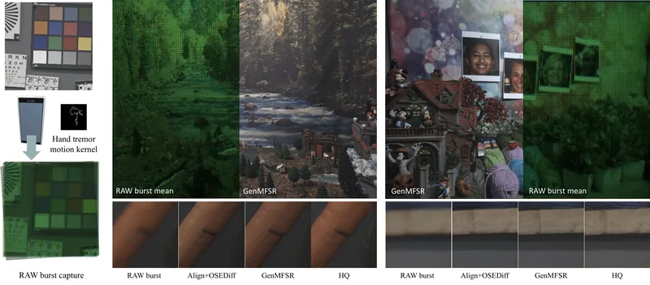

Harshana Weligampola
I build cameras that see more with less.
Ph.D. candidate, Electrical & Computer Engineering · Purdue University
Advised by Prof. Stanley Chan and Prof. Qi Guo

The problem
Sharp images need big lenses.
I make thin optics that still deliver.
Lenses are bulky
High-quality zoom and telephoto imaging relies on long, heavy stacks of glass, which do not fit in thin devices.
Flat optics are imperfect
Metasurfaces shrink a lens to a thin nanostructured layer, but the images they form are blurry and color-distorted.
Co-design closes the gap
I design the optics together with a generative model that knows what real images look like, so software recovers what the hardware gives up.
What I work across
From photons to pixels, end to end
Optics
- Metasurface and refractive lens systems
- Physics-based image formation
- Optical aberration correction
Generative models
- Diffusion and flow matching
- One-step and dual-branch diffusion
- Foundation-model image priors
Camera pipelines
- RAW and burst processing
- Multi-frame super-resolution
- Extreme low-light enhancement
Selected results
Recent work

Optics Express 2026
MetaTele: a compact metasurface telephoto camera

ICASSP 2026 · Oral
Diffusion algorithm for metalens aberration correction

CVPR Workshops 2026
GenMFSR: generative multi-frame RAW super-resolution
Industry experience
Research in industry labs
A.I. Research Intern
Nokia Bell Labs · Antwerp
Deep learning for the physical layer of mobile networks under latency constraints. Published in IEEE Access.
Research Intern
Samsung Research America · Dallas
Efficient burst RAW super-resolution with foundation image models. Became GenMFSR, CVPRW 2026.
Research Intern
Samsung Research America · Dallas
Extreme low-light image enhancement using flow matching models.
What I'm looking for